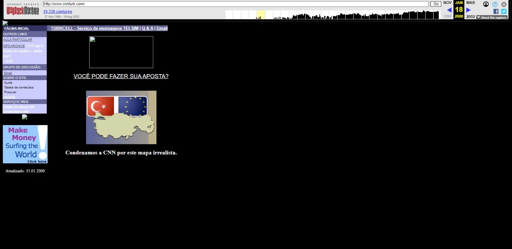
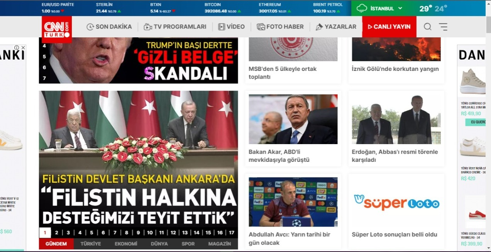
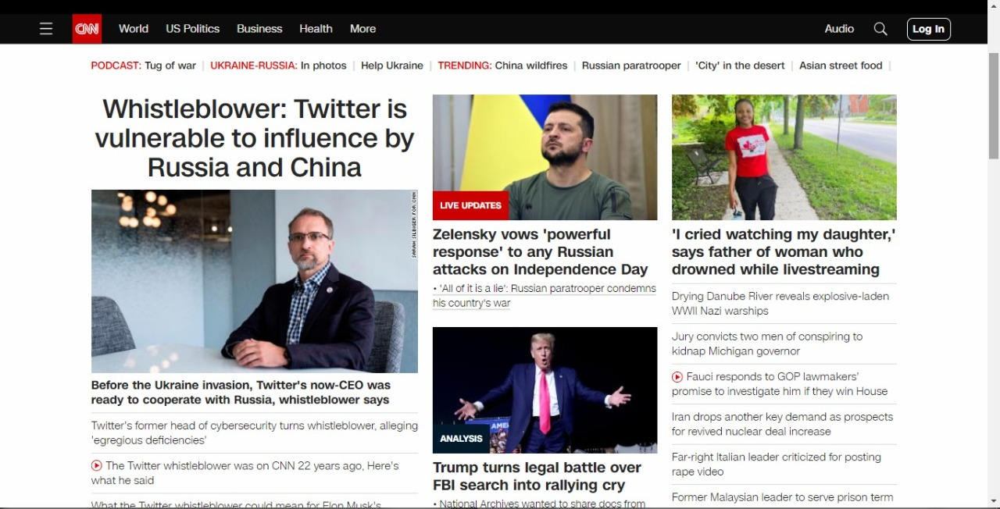

CNN
Qual era o propósito inicial do site?
A primeira página do jornal sempre mostra as principais notícias e as coisas mais interessantes
ao leitor, eles usam isso para atrair leitores a lerem seu jornal.

O site propósito mudou ao longo do tempo?
Mudou seu estilo, formas de como apresentar as notícias para o usuário, pois ao longo do tempo seu público
foi se diversificando e aumentando cada vez mais.

Quais os problemas que esse site tinha quando "novo" e quais têm agora?
Tinha má organização e estilos, além que eles tinha como foco apenas quem gostava de jornal, acompanhar e etc.
Ao meu ver agora, está bem melhor que antes, pois divulgam diversas notícias e não somente
para um público, porém deveriam ter abas para categorias diferentes, assim trazendo vários tipos de leitores.
Poderiam também destacar notícias mais importante e relevantes que vão dar mais visibilidade e engajamento.
Que melhorias você faria nesse site para que ele pudesse ser mais interessante para um público jovem, de periferia,
que não está acostumado ao uso de Internet por computadores e não tem interesses por notícias. ?
Eu destacaria as notícias mais imporantes e relevantes, trazendo também notícias que interessa os jovens, como por exemplo animes,
filmes e etc. Assim tendo um engajamento melhor. Diversificando e moldando para o jovem.
